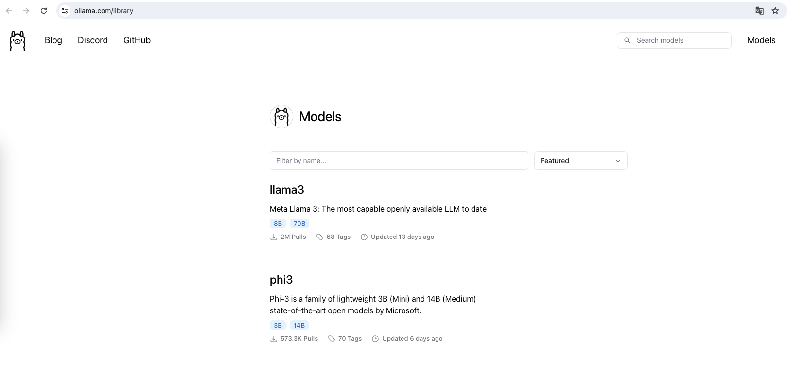

之前使用的微秘书对微信接口收费了，没法免费接入大模型。只能换成chatgpt-on-wechat接入了
往期参考文章
1、 FastGPT,ChatGLM2,WeChat本地化部署实战
2、obsidian中使用ollama部署llama3,实现本地对话
1、ollama安装
ollama安装参考：obsidian中使用ollama部署llama3,实现本地对话中的第一小节
1.1、下载对应版本ollama进行安装

1.2、在终端中使用ollama
常用命令
ollama pull [模型名称] //下载模型
ollama run [模型名称] //运行模型
ollama serve //启动ollama api服务
- 要
pull的模型可以在ollama的模型仓库中查看

- 要
run的模型可以通过ollama ls查看

ollama serve之后，就可以通过api的方式调用ollama服务了

2、FastFPT中调用ollama
2.1、安装FastGPT
安装
mkdir fastgpt
cd fastgpt
curl -O https://raw.githubusercontent.com/labring/FastGPT/main/files/deploy/fastgpt/docker-compose.yml
curl -O https://raw.githubusercontent.com/labring/FastGPT/main/projects/app/data/config.json
运行
docker-compose pull
docker-compose up -d

此时，我们可以在docker-desktop 中看到已经运行的fastgpt，其中已经自带运行了one-api
2.2、One API+ollama
参考：One-API接入ChatGLM2-6B-int4的OpenAI服务接口
登陆one api
浏览器端打开one api的网页界面localhost:3001
- 默认账号：root
- 密码：123456

新建渠道

- 类型：OpenAI 即可
- 名称：随意
- 分组：default 即可
- 模型：选择
ollama ls查看到的模型 - 密钥：随便填写一下就好，例如
sk-fastgpt - 代理：
ollama serve的地址，一般情况下用本地ip+端口11434即可
新建令牌

- 名称：随意
- 模型范围：选择渠道里面的模型即可
2.3、FastGPT+ollama
修改fastgpt的docker-compose.yml配置文件(第52行)
OPENAI_BASE_URL=http://192.168.1.9:3001/v1 //这里的IP地址是one api的地址，ip地址+one api端口3001+v1
CHAT_API_KEY=sk- //这里直接复制One-API里面的令牌

重启fastgpt
docker-compose pull
socker-compose up -d
fastgpt中新建ollama应用
 |  |
|---|---|
在AI模型中可以看到ollama在本地下载的模型，也就是在one api中选择的模型
测试